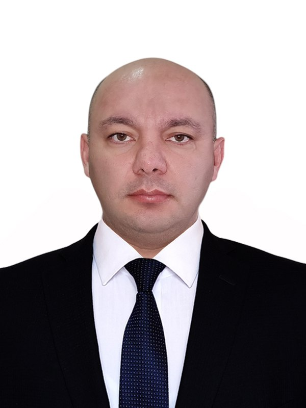
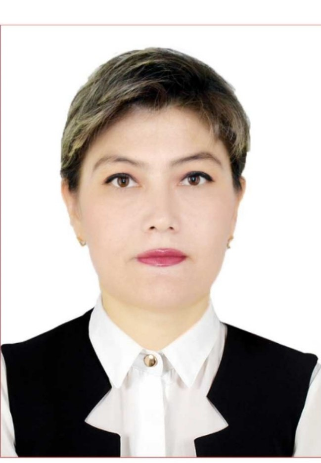
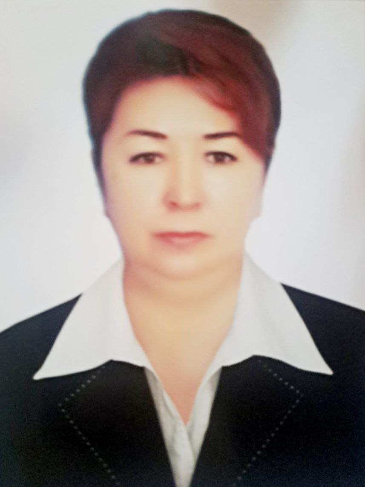

Наша история
Урта-Чирчикский районный Техникум №2 был основан в 2009 году с целью предоставления качественного среднего специального, профессионального образования и подготовки квалифицированных кадров для различных отраслей экономики региона. С момента своего основания колледж постоянно развивался, адаптируясь к меняющимся требованиям рынка труда и внедряя инновационные подходы в обучении.
За прошедшие годы мы выпустили тысячи специалистов, которые успешно трудятся на предприятиях и в организациях, способствуя развитию Узбекистана. Мы гордимся нашей историей и достижениями, а также стремимся к дальнейшему совершенствованию и лидерству в сфере профессионального образования.
Миссия и ценности
Наша миссия — подготовка высококвалифицированных, конкурентоспособных и социально ответственных специалистов, способных к непрерывному обучению и адаптации к современным вызовам рынка труда. Мы стремимся создать образовательную среду, которая способствует всестороннему развитию личности, формированию профессиональных и гражданских качеств.
Инновации
Постоянное внедрение новых технологий и методик обучения.
Профессионализм
Высокий уровень подготовки преподавателей и студентов.
Сотрудничество
Активное взаимодействие с работодателями и обществом.
Развитие
Создание условий для роста и самореализации каждого.
Руководство колледжа

Шерматов Аваз Алиджанович
Директор колледжа
Опытный руководитель с многолетним стажем в сфере образования. Под его руководством колледж достиг значительных успехов в подготовке квалифицированных кадров.

Юсупова Феруза Зокир кизи
Заместитель директора по учебной работе
Обладает богатым опытом в педагогической деятельности, обеспечивает высокое качество учебного процесса и внедряет инновационные методики.

Каюмова Зульфия Сотволдиевна
Заместитель директора по производственному обучению
Отвечает за организацию учебного и производственного процесса, внедрение новых образовательных программ и контроль качества обучения.
Юлдашева Лазокат Умаровна
Заместитель директора по духовно-просветительской работе
Организует внеурочную деятельность студентов, развивает их творческие способности и формирует активную гражданскую позицию.